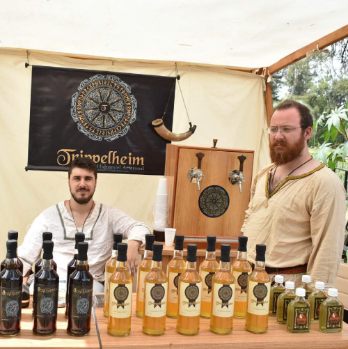

Nosotros
¿Quiénes Somos?
Somos Julio Tripel y Carlos Zacutti, dos personajes que comenzaron su camino en el mundo del hidromiel por separado, pero prácticamente al mismo tiempo. Siempre los dos fuimos buscando cómo perfeccionar nuestras recetas, qué levaduras usar, cómo reconocer la calidad de la miel que se necesita, etc.
Nos conocimos en una feria medieval, el único lugar donde conseguir hidromiel en ese entonces, dónde ya Trippelheim estaba establecido como una marca de la mano de Julio. Luego terminamos trabajando juntos en una fábrica de cerveza artesanal, ahí fue cuando nos dimos cuenta que nuestros objetivos eran similares y que nuestra política de producción era idéntica.
De esta forma nos asociamos para potenciarnos mutuamente y lograr nuestro objetivo de hacer llegar a la gente una recreación lo más fiel posible de esta bebida con tanto significado histórico, con la mejor calidad posible.
¿Qué es el Hidromiel?
Hidromiel, también llamado aguamiel, es la bebida alcohólica más antigua conocida por la humanidad. De acuerdo a los hallazgos arqueológicos se la puede ubicar en China hacia el 7000 AC. Así mismo pueden encontrarse registros en el resto del mundo, sobretodo en el norte de Europa donde tiene una gran fama y es protagonista de innumerables historias y leyendas.
Básicamente se trata de un fermento con levaduras a partir de una mezcla de miel con agua, pero la misma tiene muchas variantes dependiendo de la zona en la que se fabricaba y los agregados que llevaba.
Están los estilos neutros o clásicos, especiados y frutados; en la categoría de clásicos se pueden encontrar tres variantes, la dulce, la semi-dulce y la seca. A los especiados se los consideraba con propiedades medicinales y se los conoce como Metheglins. Las variantes frutadas se las llama genéricamente como Melomel y eran las mas frecuentes, ya que se fermentaba el preparado de miel y agua usando las levaduras salvajes que se encontraban sobre las frutas. Cada tipo de Melomel lleva su nombre especifico dependiendo de la fruta empleada en la fermentación debido a que ésta le aporta una característica única, como por ejemplo el Cyser en el que se usan manzanas en su proceso y hereda notas que recuerdan a la sidra.
Hoy en día ofrecemos un estilo de cada uno, en representación del "neutro" tenemos el Clásico, un hidromiel dulce, de sabor intenso y nítido. En la categpría "Metheglins" la muy solicitada Black, con un claro sabor especiado y un color oscuro por una miel caramelizada. Por último en los "Melomel" les traemos el Pyment, en honor a los romanos, con un armonioso aroma y sabor a uvas.
Somos productores de hidromiel y otras bebidas alcohólicas basadas en la miel. Queremos que todos los amantes de las buenas bebidas tengan su oportunidad de probar la mejor versión de este brebaje histórico.
Buscamos ser líderes en la producción de hidromiel, y queremos que todos lo conozcan en su mejor expresión, fabricado con productos de calidad y respetando los tiempos de producción para lograr el mejor resultado.
Nos basamos en los siguientes valores que nos sirven de guía en el día a día, tanto fuera como dentro de fábrica:
- Calidad
- Honestidad
- Respeto
- Inspiración
- Motivación
